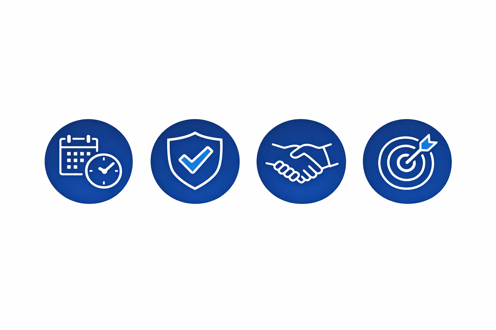
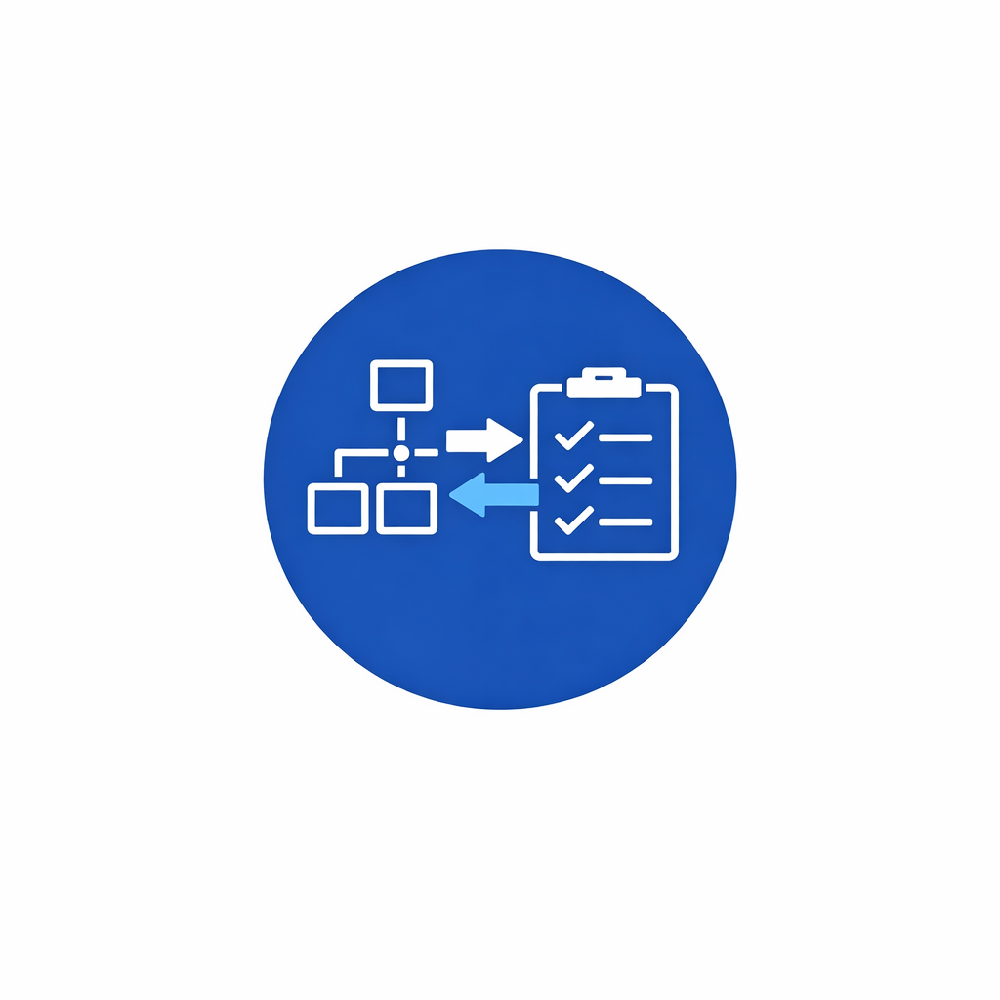

IT Programme Delivery That Delivers — On Time and On Budget
Helping UK organisations successfully deliver complex cyber security, cloud and enterprise IT programmes with 30+ years of hands-on experience.
✔ 150+ Programmes Delivered | ✔ 30+ Years Experience | ✔ Trusted Across NHS, Defence & Enterprise
Who I Work With
- Organisations delivering complex cyber security or cloud transformation programmes
- Businesses with delayed, high-risk or failing IT programmes
- Enterprises needing senior programme leadership and governance
Executive Profile
SC Cleared Senior IT Programme Manager delivering large-scale cyber security, cloud transformation and enterprise infrastructure programmes across NHS England, Defence and global organisations.
Specialist in stabilising complex programmes, improving delivery performance and ensuring successful outcomes across high-risk environments.
Proven Results
- Delivered £40M cyber security uplift programme for NHS England, improving CAF maturity across all domains.
- Led global Windows 10/11 transformation for 126,000 devices across 42 countries.
- Delivered Azure and AWS cloud adoption programmes reducing operational cost by 18%.
How I Help
Programme Delivery
End-to-end leadership of complex IT programmes ensuring delivery on time, within budget and aligned to business outcomes.
Programme Recovery
Stabilising failing or high-risk programmes and getting delivery back on track quickly and effectively.
Cyber Security Transformation
Delivering enterprise cyber security programmes including CAF, IAM, SIEM and resilience frameworks.
Cloud & Infrastructure Transformation
Leading Azure, AWS and enterprise infrastructure programmes improving scalability and resilience.
Programme Case Studies
NHS England Cyber Security Programme
Delivered CAF-aligned cyber security uplift implementing MFA, CyberArk, Splunk and Azure security controls.
Outcome: Improved national cyber resilience and strengthened security posture.
Global Workplace Transformation
Led Windows 10/11 transformation across 126,000 devices in 42 countries.
Outcome: Delivered a secure, modern global workplace environment.
Enterprise Cloud Transformation
Delivered Azure and AWS programmes across global organisations.
Outcome: Improved scalability, resilience and reduced operational cost.
Why Organisations Work With Me
30+ Years of Experience
Real-world programme delivery across NHS, Defence, and enterprise organisations.
SC Cleared
Trusted to lead high-security programmes with full clearance and compliance.
Hands-on Leadership
Active engagement and delivery ownership — not just advisory oversight.

Proven Delivery
Consistent success stabilising and delivering complex, high-risk programmes.
Consulting Expertise
Cyber Security
CAF, IAM, MFA, CyberArk, Splunk.
Cloud Platforms
Azure, AWS, Entra, Intune.
Workplace Transformation
Global Windows migrations and collaboration platforms.

Governance & PMO
RAID, financial control and programme assurance.
Ready to Deliver Your Programme Successfully?
Get experienced, hands-on support to ensure your programme delivers.
No obligation — just practical advice.